Decision
Orient to the ask, compare choices, record what is needed next.
Put the ask and trade-offs before the implementation detail.
Characteristic modules
- ask band
- comparison grid
- decision rail
- non-goals
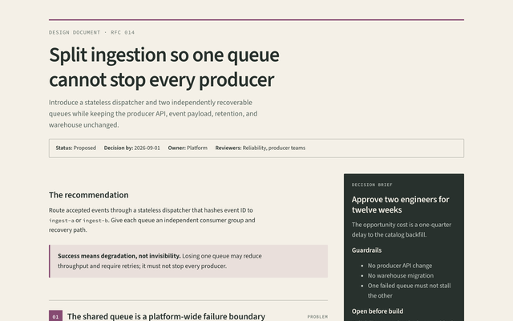
Design docShould we do this, and is the approach sound?Theme: field-notes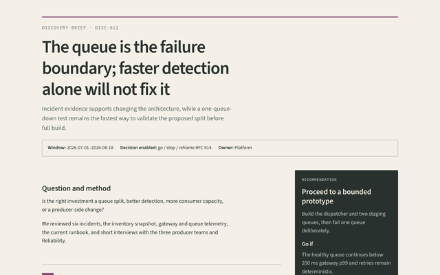
Discovery briefWhat did we learn, and should we proceed?Theme: field-notes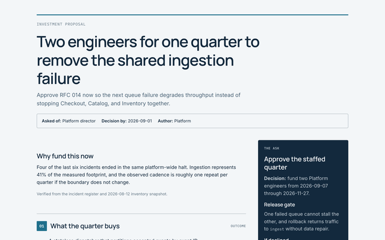
ProposalShould I approve this?Theme: executive-navy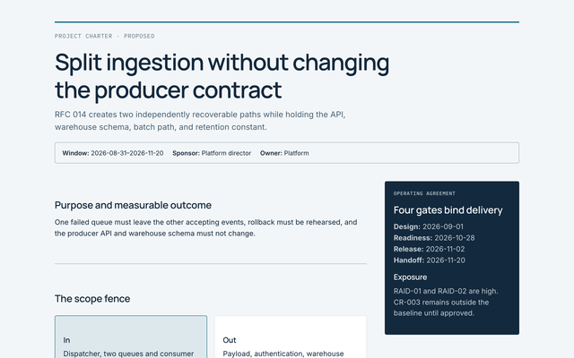
Project charterWhat are we committing to, and who can decide?Theme: executive-navy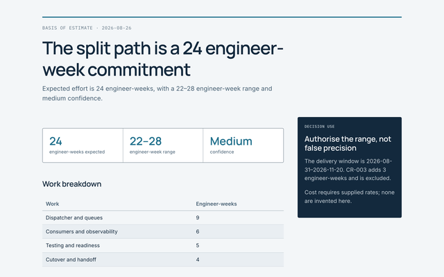
Basis of estimateWhat will this take, and how confident are we?Theme: executive-navy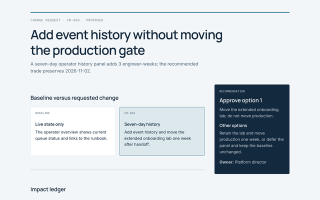
Change requestShould we change the agreed baseline?Theme: executive-navyRecord
Confirm status, read the decision, trace consequences.
Preserve one settled choice and make its consequences traceable.
Characteristic modules
- decision statement
- consequence grid
Contract
Find an exact rule, example, or compliance condition.
Make exact rules, specimens, and compliance conditions easy to scan.
Characteristic modules
- contract index
- requirement
- specimen
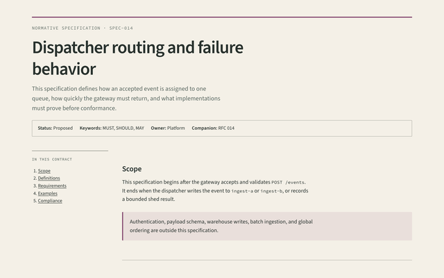
SpecificationWhat exactly must I build, and how do I know I am done?Theme: field-notes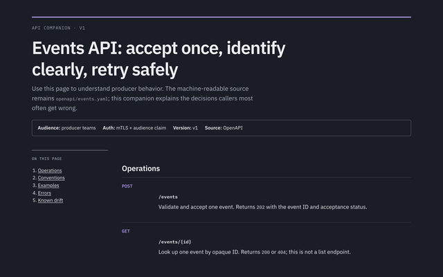
API contractHow do I call this correctly, and what happens when I do it wrong?Theme: console-violet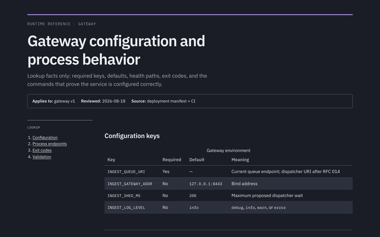
ReferenceWhat is the exact fact?Theme: console-violet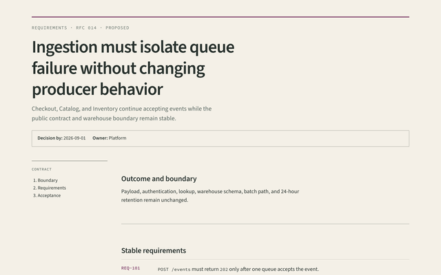
Requirements specificationWhat outcome and behavior must delivery satisfy?Theme: field-notes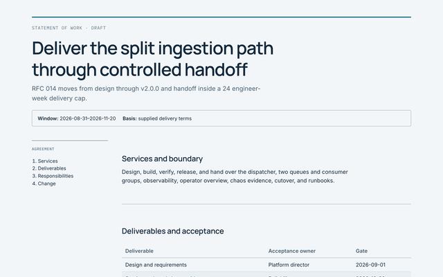
Statement of workWhat services and acceptance are agreed?Theme: executive-navy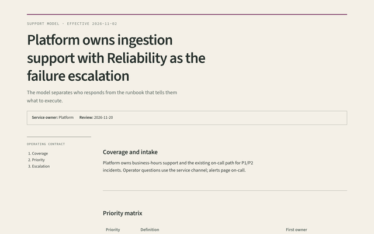
Support modelWho supports this service, and under what rules?Theme: field-notesProcedure
Establish safety, execute in order, verify or recover.
Keep safe execution, verification, and recovery in one visible path.
Characteristic modules
- procedure steps
- checkpoint
- outcome
- danger
Learning
Build context, complete a path, consolidate understanding.
Build understanding through staged context, practice, and checkpoints.
Characteristic modules
- learning goal
- section number
- reading time
- checkpoint
- section takeaway
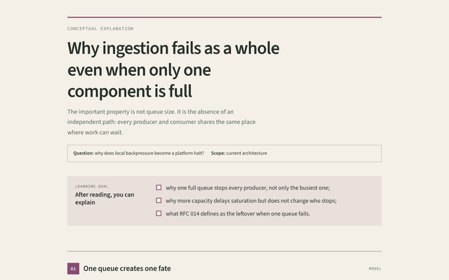
ExplanationWhy is it like this?Theme: field-notes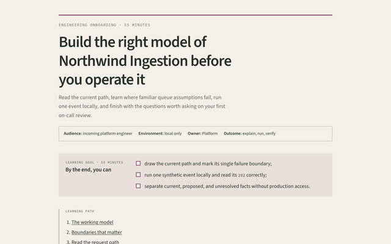
OnboardingHow do I get it running and prove it works?Theme: field-notes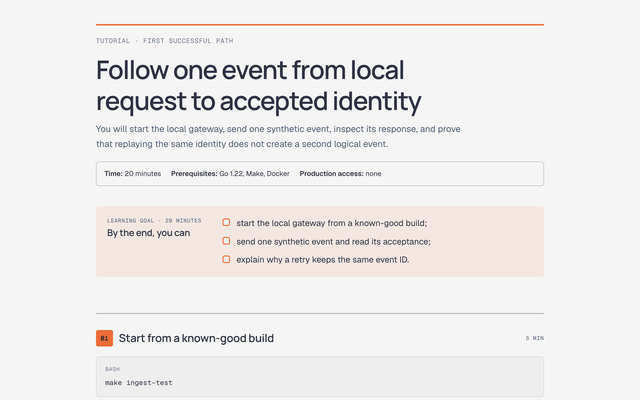
TutorialCan I learn this by doing it once?Theme: editorial-coral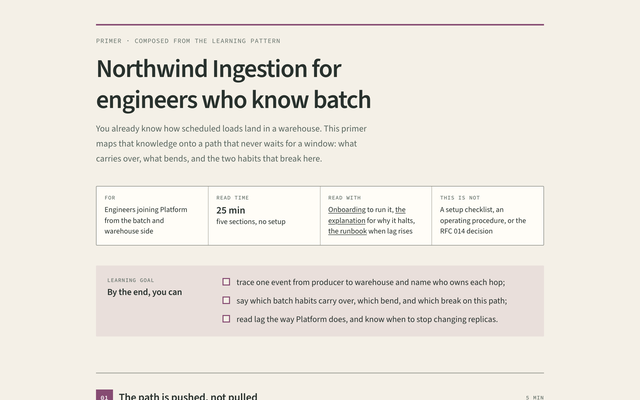
Platform primerComposedCan I reuse what I know from batch loads here?Theme: field-notes. Nearest preset: ExplanationSystem
Build a spatial model, then inspect boundaries and states.
Use maps, boundaries, interfaces, and states to build a spatial model.
Characteristic modules
- system map
- system rail
- state grid
Incident
See severity first, reconstruct time, connect cause to action.
Lead with impact, reconstruct time, then connect cause to owned action.
Characteristic modules
- impact strip
- timeline
- cause chain
- action register
Suite
Orient across a linked documentation set.
Orient readers across a linked set with ownership and freshness visible.
Characteristic modules
- document map
- table scroll
Plan
Follow work from baseline through dependencies and control gates.
Make workstreams, dependencies, gates, and forecast movement visible.
Characteristic modules
- milestone rail
- workstream board
- plan gates
Assurance
See the verdict, inspect evidence, then accept or close exposure.
Put the verdict beside the evidence, findings, and residual risk.
Characteristic modules
- assurance verdict
- evidence matrix
- finding register
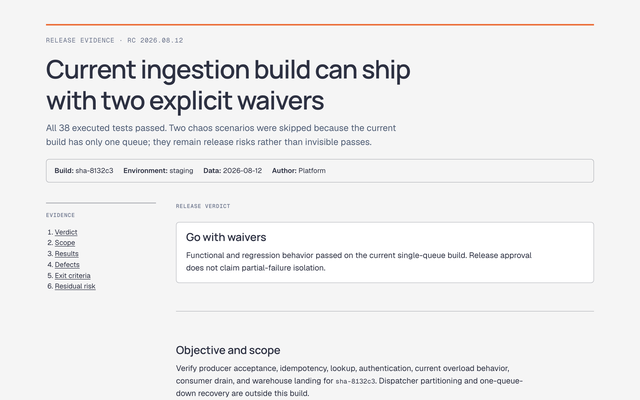
Test reportCan we ship, on this build?Theme: editorial-coral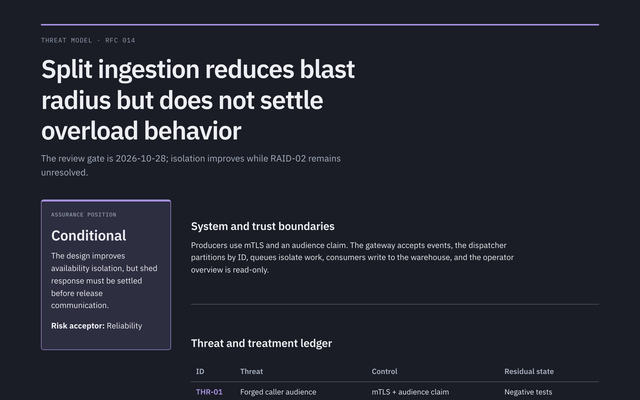
Threat modelWhat can go wrong, and what will we do?Theme: console-violet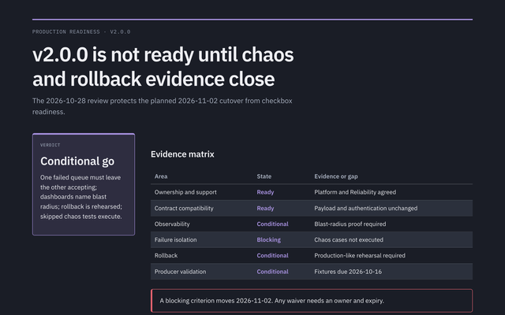
Production readiness reviewIs this change ready for production?Theme: console-violet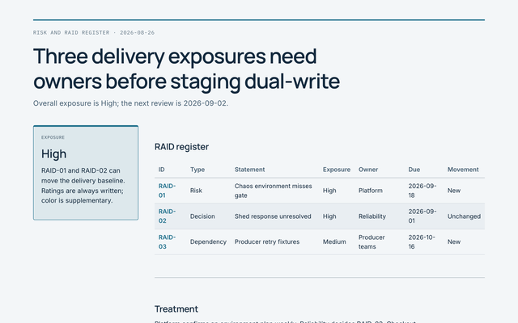
Risk and RAID registerWhere is delivery exposed, and who owns it?Theme: executive-navyBrief
Read current state, material change, required action, next checkpoint.
Expose current state, material change, required action, and next update.
Characteristic modules
- brief status
- action required
- brief grid
- next checkpoint
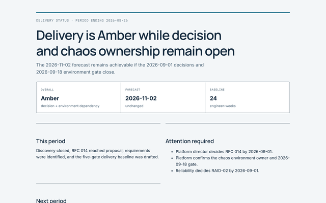
Delivery status reportWhere are we now, and what needs attention?Theme: executive-navy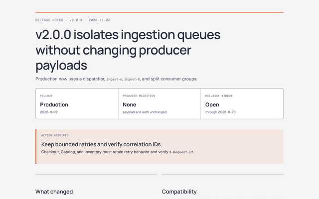
Release notesWhat changed, and what must readers do?Theme: editorial-coral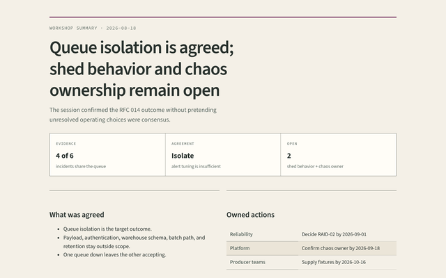
Workshop summaryWhat did the workshop establish and leave open?Theme: field-notes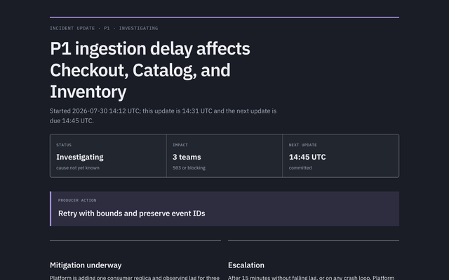
Incident updateWhat is happening now, and when is the next update?Theme: console-violet